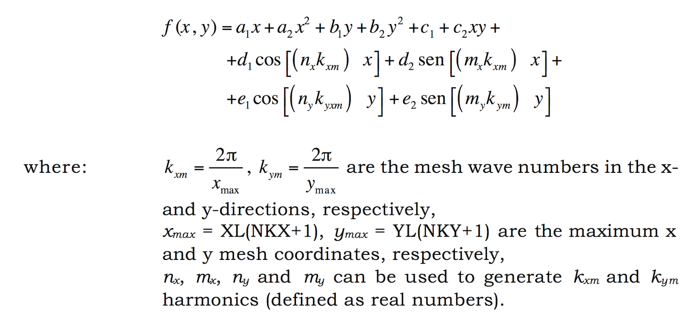

Obstacles–Complete Definition¶
..note:: If you are a beginner, we suggest using the linear function only described in Section ‘Obstacles–Simple Definition’.
Interior obstacles are defined as any nonflow regions within the computational mesh. Obstacle surfaces are generated with a series of conic sections that may overlap one another to form boundaries that are arbitrarily complex. Cells are then designated as flow or nonflow regions, depending upon which side of the surface f (x,y) = 0 they reside, where f (x,y) is a modified conic function of the form :
The cells that satisfy the conditions f(x,y )< 0 (for any (x,y) within the cell) respond to the condition of the IOH flag associated with each function, being totally opened or closed to the flow. Hence, each obstacle is defined by a group of conic functions with their associated indicator flag.
The obstacles generation follows the order in which the functions are defined. Adjacent obstacles should be superposed to guarantee that all the frontier cells are included. Even if no obstacles are defined, the whole 5 lines have to be filled.
An example of obstacle configration:
$obstcl
4 = nobstype
3 = nobs
0.0 1.00 0.0 0.0 = oa2(nobs),oa1(nobs),ob2(nobs),ob1(nobs)
0.0,-750.0,1 = oc2(nobs),oc1(nobs),ioh(nobs)
0.0 1.0 0.0 0.0 = oa2(nobs),oa1(nobs),ob2(nobs),ob1(nobs)
0.0,-700.0,0 = oc2(nobs),oc1(nobs),ioh(nobs)
0.0 0.0 0.0 1.0 = oa2(nobs),oa1(nobs),ob2(nobs),ob1(nobs)
0.0,-9.0,0 = oc2(nobs),oc1(nobs),ioh(nobs)
3 = nobs
0.0 1.00 0.0 0.0 = oa2(nobs),oa1(nobs),ob2(nobs),ob1(nobs)
0.0,-600.0,1 = oc2(nobs),oc1(nobs),ioh(nobs)
0.0 1.0 0.0 0.0 = oa2(nobs),oa1(nobs),ob2(nobs),ob1(nobs)
0.0,-550.0,0 = oc2(nobs),oc1(nobs),ioh(nobs)
0.0 0.0 0.0 1.0 = oa2(nobs),oa1(nobs),ob2(nobs),ob1(nobs)
0.0,-9.0,0 = oc2(nobs),oc1(nobs),ioh(nobs)
3 = nobs
0.0 1.00 0.0 0.0 = oa2(nobs),oa1(nobs),ob2(nobs),ob1(nobs)
0.0,-450.0,1 = oc2(nobs),oc1(nobs),ioh(nobs)
0.0 1.0 0.0 0.0 = oa2(nobs),oa1(nobs),ob2(nobs),ob1(nobs)
0.0,-400.0,0 = oc2(nobs),oc1(nobs),ioh(nobs)
0.0 0.0 0.0 1.0 = oa2(nobs),oa1(nobs),ob2(nobs),ob1(nobs)
0.0,-9.0,0 = oc2(nobs),oc1(nobs),ioh(nobs)
3 = nobs
0.0 1.00 0.0 0.0 = oa2(nobs),oa1(nobs),ob2(nobs),ob1(nobs)
0.0,-300.0,1 = oc2(nobs),oc1(nobs),ioh(nobs)
0.0 1.0 0.0 0.0 = oa2(nobs),oa1(nobs),ob2(nobs),ob1(nobs)
0.0,-250.0,0 = oc2(nobs),oc1(nobs),ioh(nobs)
0.0 0.0 0.0 1.0 = oa2(nobs),oa1(nobs),ob2(nobs),ob1(nobs)
0.0,-9.0,0 = oc2(nobs),oc1(nobs),ioh(nobs)
$end
- NOBS
- NOBS (≥ 0) Number of obstacles interior to the computational mesh.
- NC(NOBS)
- NC: Number of conic functions used to define each obstacle. NC is an array with NOBS data.
- OA2(NOBS), OA1(NOBS), OB2(NOBS), OB1(NOBS)
- OA2(n) Coefficient of the \(x^2\) term in obstacle function n.
- OA1(n) Coefficient of the x term in obstacle function n.
- OB2(n) Coefficient of the \(y^2\) term in obstacle function n..
- OB1(n) Coefficient of the y term in obstacle function n.
- OC2(NOBS), OC1(NOBS), IOH(NOBS)
- OC2(n) Coefficient of the xy term in obstacle function n.
- OC1(n) Constant term in obstacle function n.
- IOH(n) Interior obstacle indicator flag on cells satisfying f(x,y)<0 (for any (x,y) within the cell) for obstacle function n : ≠0 adds obstacle =0 eliminates obstacle
- OD2(n), OD1(n), OE2(n), OE1(n)
- OD2(n) Amplitude of the x-direction sine term in obstacle function n.
- OD1(n) Amplitude of the x-direction cosine term in obstacle function n.
- OE2(n) Amplitude of the y-direction sine term in obstacle function n.
- OE1(n) Amplitude of the y-direction cosine term in obstacle function n.
- NXO(n), MXO(n), NYO(n), MYO(n)
- NXO(n) (Real number) Mesh wavenumber coefficient in the x-direction (kxm), for the x- direction cosine term in obstacle function n.
- MXO(n) (Real number) Mesh wavenumber coefficient in the x-direction (kxm), for the x-direction sine term in obstacle function n.
- NYO(n) (Real number) Mesh wavenumber coefficient in the y-direction (kym), for the y-direction cosine term in obstacle function n.
- MYO(n) (Real number) Mesh wavenumber coefficient in the y-direction (kym), for the y-direction sine term in obstacle function n.